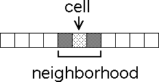

The state of each cell in the second generation is determined by the states of the cells in the neighborhood of the given cell. For example, suppose CA universe is linear and the neighborhood of a cell is the cell itself, together with the cell on its immediate right and the cell on its immediate left.
|  |
Return to Background